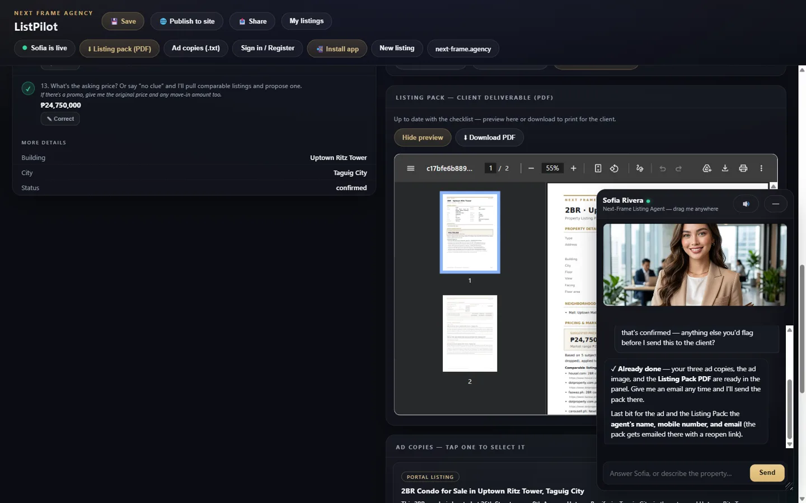
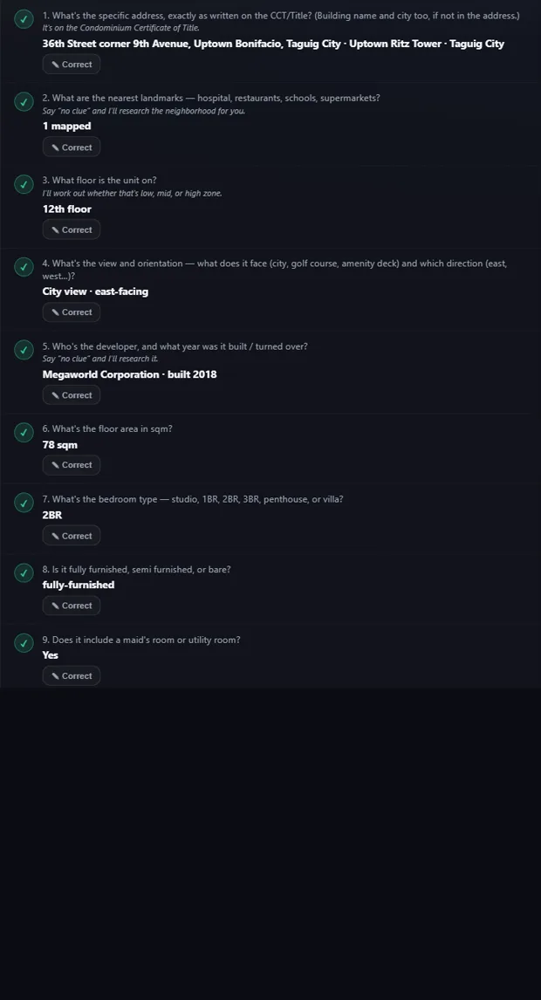
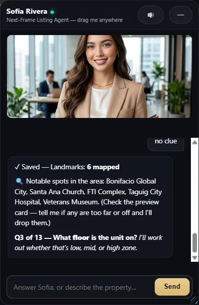
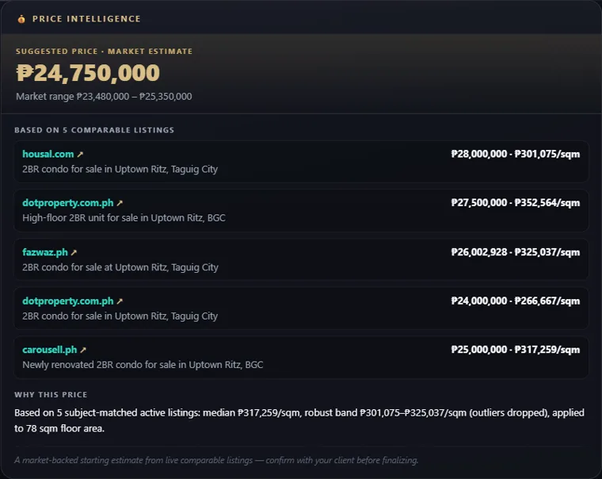
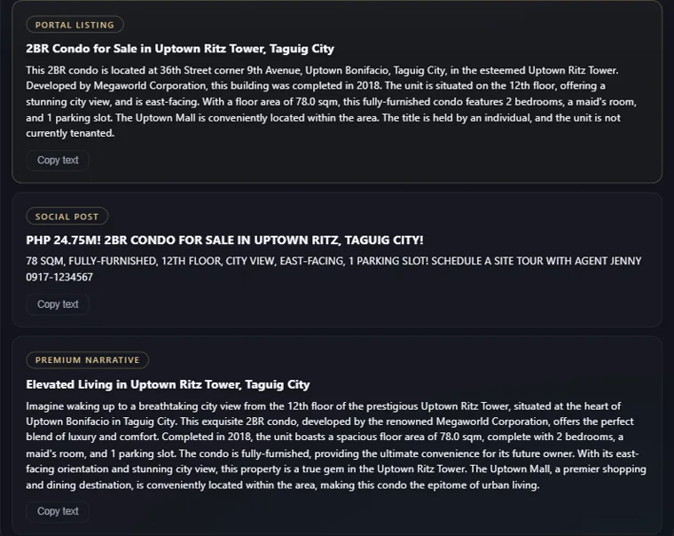
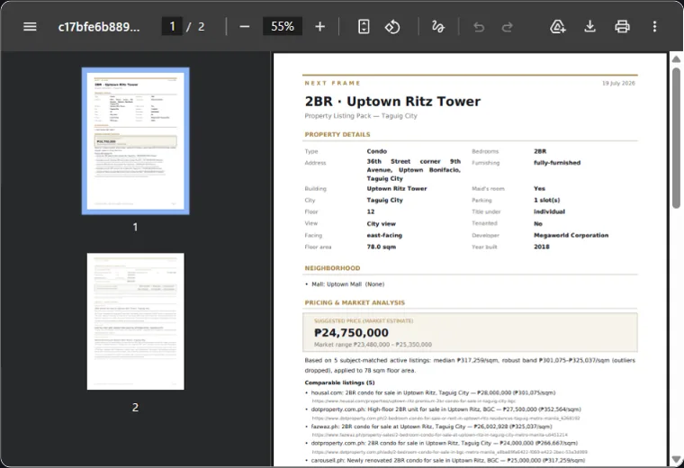
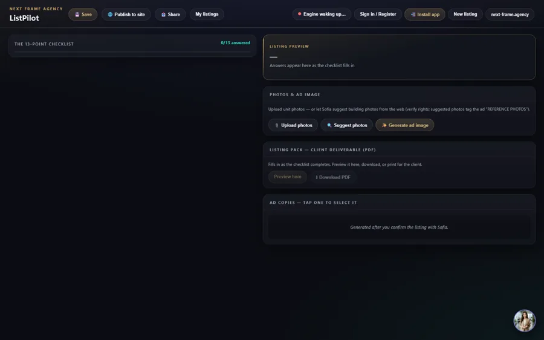
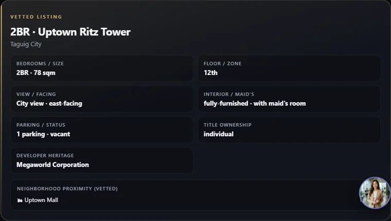
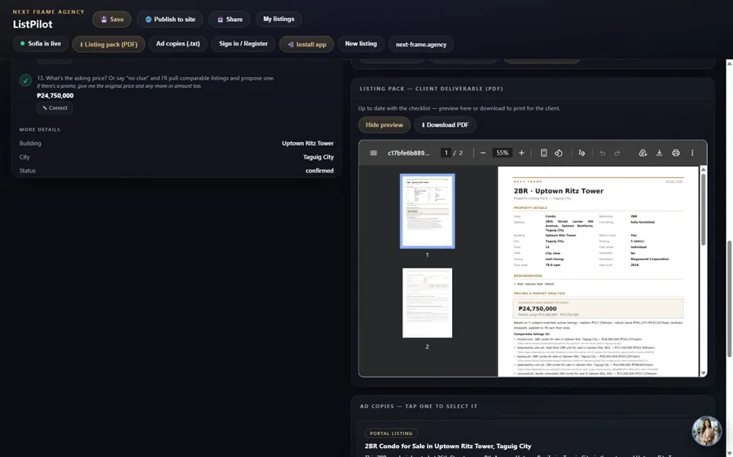

The listing team you can't afford — free.
- Nothing to install. Free.
- A published page before the call ends
- A price you can defend
One thread. A priced, published listing in ten minutes.


"No clue" is a valid answer.

Reads the building for you.

Real comparable listings. You confirm the number.

Portal, social, buyer message.

Leave-behind, formatted and emailed.

Ad image, shot list, presenter voice.

A live page and a registry number, one tap.

The same agent, running right now. Bring a property you know.
First wake takes a few seconds.
Live registry · 4 published units · pulled 2026-07-19
Bring one property. We'll build the listing in the room.